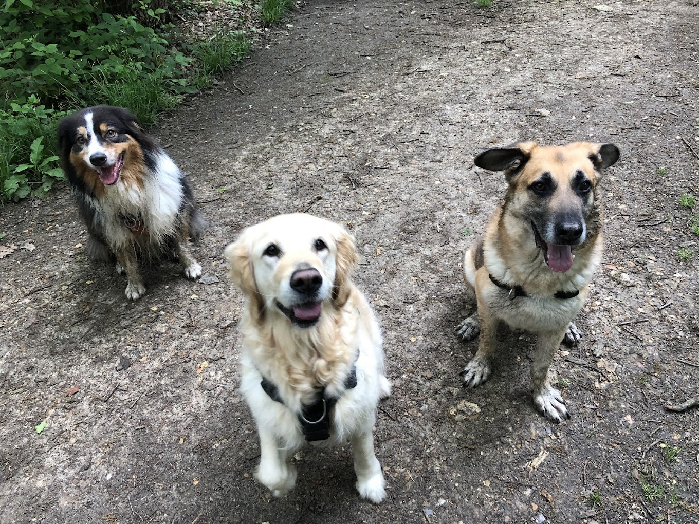
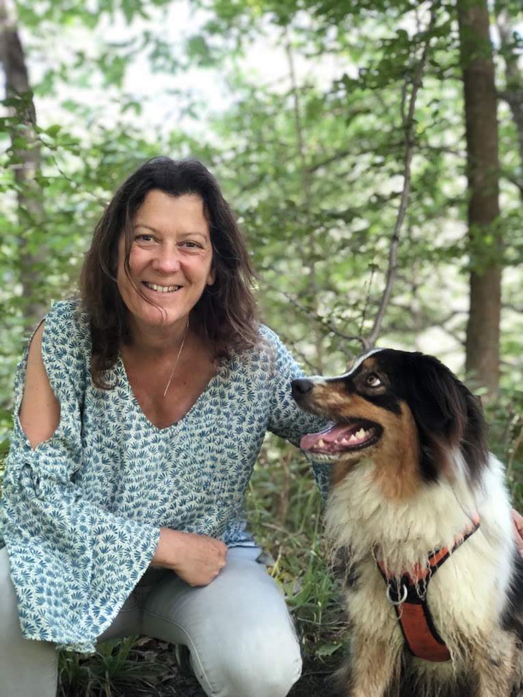
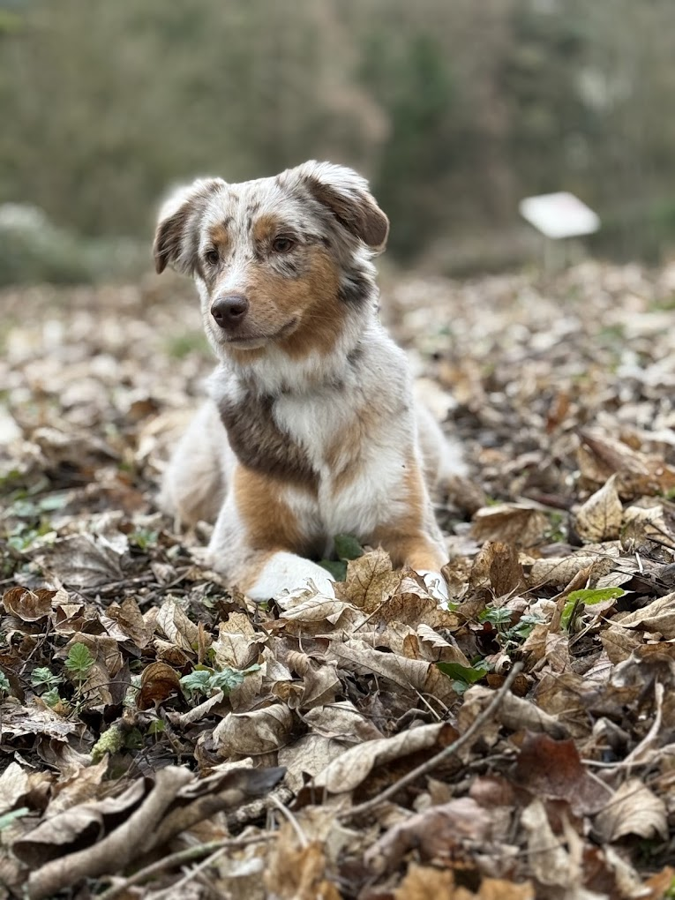
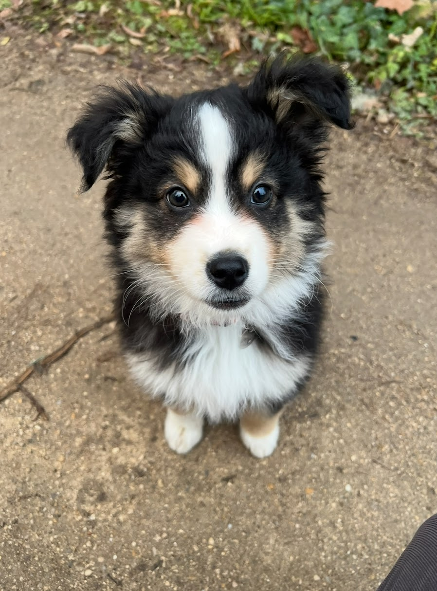
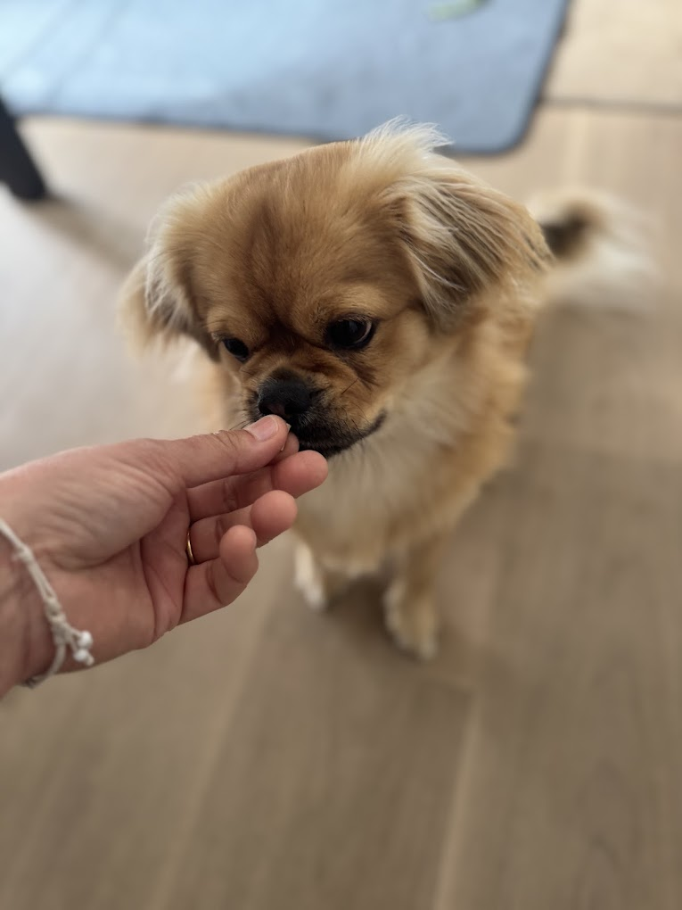
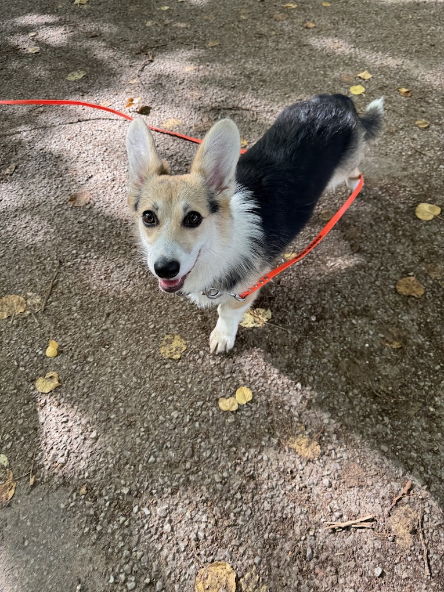
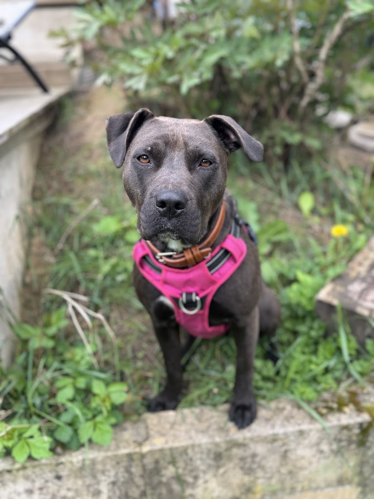
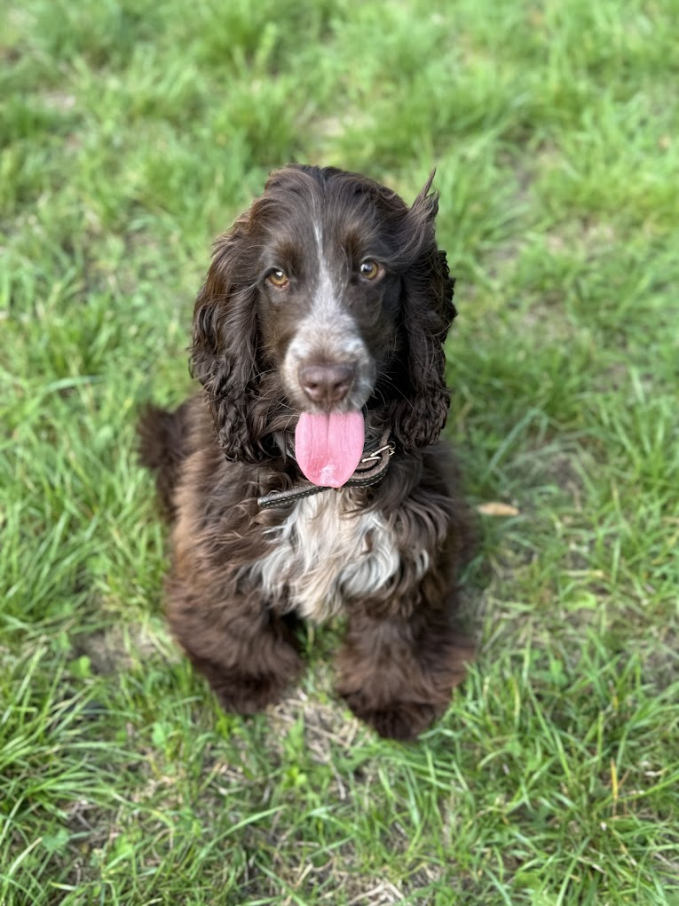
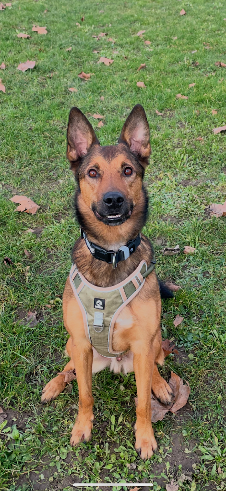

Louveciennes & environs
STEPH'EDUC
Stéphanie Englebert — Éducatrice comportementaliste canin
Des méthodes douces pour des résultats forts
Je vous accompagne, vous et votre chien, avec bienveillance et à son écoute, pour construire ensemble une relation positive et durable.
60 € · 1 heure de coaching individuel
Votre situation
Qu'est-ce qui vous amène ?
Choisissez ce qui ressemble le plus à votre quotidien avec votre chien : je vous explique ce qui se passe, et comment je peux vous aider.
Tirage en laisse
Ce qui se passe
Votre chien avance plus vite que vous, tire sur la laisse et les promenades deviennent fatigantes. Souvent, il est simplement très stimulé par son environnement et n'a jamais appris qu'une laisse détendue pouvait être payante.
Ce que l'on peut travailler
La marche en laisse détendue, votre attention mutuelle, la gestion des distractions (odeurs, congénères, vélos…) et le choix d'un équipement adapté.
Ce que je peux vous proposer
Un bilan pour comprendre pourquoi il tire, puis des séances en extérieur, dans votre quartier ou sur mon terrain de Mareil-Marly, pour retrouver des balades agréables.
Réserver mon bilanRéactivité
Ce qui se passe
Il aboie, se dresse ou tire vers d'autres chiens, des personnes ou des véhicules. Derrière ces réactions se cachent souvent de la peur, de la frustration ou un trop-plein d'excitation.
Ce que l'on peut travailler
La lecture de ses signaux, la gestion des distances, l'apprentissage de comportements alternatifs et la baisse progressive de son niveau de stress.
Ce que je peux vous proposer
Un accompagnement progressif et sans confrontation, à son rythme, pour qu'il gagne en sérénité — et vous aussi pendant les promenades.
Réserver mon bilanProblèmes à la maison
Ce qui se passe
Destructions, aboiements, malpropreté, difficultés à rester seul ou tensions entre chiens : la vie à la maison devient compliquée pour tout le monde.
Ce que l'on peut travailler
Les besoins de votre chien (dépense, repos, occupation), l'apprentissage de la solitude, la propreté, les règles de vie et la cohabitation.
Ce que je peux vous proposer
Des séances à votre domicile, là où les difficultés se produisent, pour mettre en place des solutions concrètes adaptées à votre foyer.
Réserver mon bilanRappel
Ce qui se passe
Dès qu'il est détaché, votre chien n'écoute plus : il part suivre une odeur, jouer avec un congénère… et revient quand il l'a décidé.
Ce que l'on peut travailler
Un rappel fiable et joyeux, construit étape par étape : la motivation, la gestion des distractions et la sécurité en liberté.
Ce que je peux vous proposer
Des séances sur mon terrain d'éducation sécurisé à Mareil-Marly, idéal pour travailler le rappel sereinement avant de passer en milieu ouvert.
Réserver mon bilanPeurs
Ce qui se passe
Bruits, inconnus, voitures, nouveaux lieux… votre chien tremble, se fige, fuit ou refuse d'avancer. La peur l'empêche de profiter de son quotidien.
Ce que l'on peut travailler
Sa confiance en lui, une découverte très progressive de ce qui l'effraie, et la façon dont vous pouvez le rassurer et l'aider.
Ce que je peux vous proposer
Un accompagnement tout en douceur, sans jamais le forcer, pour l'aider à reprendre confiance pas à pas.
Réserver mon bilanÉducation du chiot
Ce qui se passe
Mordillements, propreté, excitation, nuits agitées… L'arrivée d'un chiot est une période merveilleuse, mais aussi pleine de questions.
Ce que l'on peut travailler
Les bonnes bases dès le départ : socialisation, propreté, apprentissage de la solitude, gestion des émotions et premiers apprentissages.
Ce que je peux vous proposer
Des séances adaptées à son âge pour poser des fondations solides. Mes conseils pour bien démarrer sont aussi juste ici.
Réserver mon bilanAutre situation
Ce qui se passe
Votre situation ne rentre dans aucune case ? C'est normal : chaque chien est unique, et chaque difficulté a son histoire.
Ce que l'on peut travailler
Nous faisons le point ensemble sur ce qui vous préoccupe, sans jugement, pour comprendre votre chien et vos attentes.
Ce que je peux vous proposer
Le bilan est fait pour ça : une heure ensemble pour observer votre chien, comprendre votre quotidien et trouver la bonne approche.
Réserver mon bilanPlusieurs difficultés à la fois ? Faites le mini-diagnostic en 2 minutes →
Mini-diagnostic
Quel accompagnement pour votre chien ?
Dix questions qui s'adaptent à vos réponses, deux minutes. Une orientation personnalisée, pour savoir par où commencer.
Question 1 sur 10
Votre orientation
Voici ce que nous avons identifié
Ce qui semble prioritaire
L'accompagnement qui pourrait vous convenir
Pourquoi cette orientation :
Cette orientation est indicative : dix questions ne remplacent pas un bilan comportemental. Seul un vrai échange, avec votre chien sous les yeux, permet de comprendre ce qui se joue vraiment.
Nouvelle adoption
Vous venez d'adopter un chien ?
Chiot ou chien adulte, les premières semaines comptent énormément. Voici l'essentiel pour bien démarrer ensemble.
-
L'arrivée à la maison
Offrez-lui un coin calme et rassurant, limitez les visites les premiers jours et laissez-le explorer à son rythme.
-
Des règles claires
Fixez en famille des règles simples (canapé, chambre, repas…) et tenez-les dès le premier jour : la constance le rassure.
-
Les premières promenades
Des sorties courtes et régulières, dans des lieux calmes. Laissez-le renifler : c'est ainsi qu'il découvre et se détend.
-
La socialisation
Faites-lui découvrir bruits, personnes, congénères et lieux, progressivement et toujours de façon positive.
-
Le rappel
Commencez tôt, dans un endroit sécurisé, et rendez le retour vers vous toujours agréable — jamais pour le gronder.
-
Les erreurs à éviter
Punir, en demander trop vite, surexposer un chien craintif ou le laisser seul de longues heures dès l'arrivée.
Envie d'être accompagné dès le début ? Je vous aide à poser des bases solides, adaptées à votre chien et à votre foyer.
Réserver mon bilanMa méthode
L'éducation positive, à l'écoute de votre chien
Pas de rapport de force, pas de contrainte : je m'appuie sur le renforcement positif et l'observation fine de chaque chien pour construire une relation de confiance durable.
Observation & écoute
Chaque chien est unique : je prends le temps d'observer son langage corporel, son vécu et ses besoins avant toute action.
Renforcement positif
Je préfère récompenser les bons comportements plutôt que sanctionner les mauvais : une méthode douce, efficace et respectueuse de votre chien.
Pédagogie pour le maître
Vous repartez avec des clés concrètes et applicables au quotidien, pour poursuivre le travail en toute autonomie.
Suivi dans la durée
Je ne vous laisse pas seuls après la première séance : je reste disponible pour des bilans réguliers et des ajustements selon vos progrès.

À propos
Stéphanie Englebert
Je suis éducatrice comportementaliste canin certifiée, installée à Louveciennes.
Pendant plus de vingt ans, j'ai exercé comme juriste dans le secteur du bâtiment. Une carrière solide, mais un autre chemin m'attendait : celui tracé par Roxy, mon chien, dont l'adoption a tout changé. Grâce à lui, j'ai découvert le monde du comportement canin, m'y suis passionnée, et j'ai décidé d'en faire mon métier.
Je me suis formée auprès de Canidélite, organisme de formation reconnu, pour devenir éducatrice comportementaliste canin. Aujourd'hui, cela fait 5 ans que je mets à profit cette double expérience — la rigueur d'une longue carrière juridique et une connaissance fine du comportement animal — pour accompagner chaque binôme maître-chien avec précision, patience et bienveillance.
- Formation certifiée auprès de Canidélite
- Approche 100% positive, sans coercition
- Suivi personnalisé pour chaque binôme maître-chien
Galerie
Quelques élèves à quatre pattes
Je partage ici quelques moments avec mes élèves et leurs maîtres, au fil des séances.







« Un énorme merci à Stéphanie pour ses précieux conseils, sa disponibilité et sa grande douceur. Notre petite york est très craintive et Stéphanie a su nous montrer comment l'aider, afin de rendre les promenades plus sereines. Elle est adorable avec les chiens, et aussi avec les maîtres qu'elle guide avec bienveillance. Nous sommes conquis. »
« Je recommande vivement Stéphanie ! Elle est intervenue en urgence lors de l'arrivée de notre deuxième chien et ses conseils ont été vraiment précieux pour rétablir un climat serein entre eux. Je l'ai ensuite revue pour l'éducation de mon chiot : très patiente, agréable et toujours de bons conseils. Une vraie professionnelle en qui on peut avoir confiance. »
« Stéphanie a été une super entrée dans le monde canin. Elle s'est montrée ultra bienveillante, patiente et à mon écoute à l'accueil de mon chiot fou Willow. J'ai pu, en quelques séances à peine, calmer mes inquiétudes et mettre en place des conseils concrets pour avancer sereinement en autonomie. Je recommande ++ »
« Merci beaucoup Stéphanie pour votre accompagnement, votre douceur et votre patience ! Grâce à votre écoute et à vos conseils, nous avons pu progresser en confiance et mieux comprendre notre BAM. Votre bienveillance et votre professionnalisme ont fait toute la différence. »
« Stéphanie est pro, passionnée, à l'écoute du chien et des propriétaires. Sa pratique et sa philosophie éducative sont efficaces pour l'éducation du chien et clairement exposées. Toute la famille, du père aux enfants en passant par la mère, recommande. »
« Merci à Stéphanie pour son accompagnement auprès de notre chien, Udson. Elle a su prendre son temps pour comprendre nos difficultés, nous expliquer à mieux comprendre et mieux réagir au vu des problèmes qu'on rencontrait. Je recommande vivement ! »
6 avis choisis parmi les 55 avis 5 étoiles publiés sur ma fiche Google.
Prestations
Un accompagnement individuel, jamais standardisé
Je ne travaille qu'en cours individuels : chaque chien a son histoire, son rythme et ses besoins. Tout commence par un bilan, ce premier rendez-vous où l'on prend le temps de comprendre votre situation avant de construire la suite.
Le bilan — 1 heure pour faire le point
60 € 1 heure de coaching individuel
Chaque chien et chaque situation sont différents. Avant de travailler sur une difficulté, il faut prendre le temps de comprendre ce qui se joue : c'est tout l'objet de ce premier rendez-vous, chez vous ou sur mon terrain.
- Observer votre chien et comprendre votre quotidien
- Identifier ses besoins prioritaires
- Repartir avec des premières pistes concrètes
Les cours individuels
60 € de l'heure, par tranche d'heure
Après le bilan, on avance sur ce qui a été identifié : des séances en tête-à-tête, construites autour de votre binôme — éducation du chiot, rappel, marche en laisse, peurs, réactivité, cohabitation entre chiens, propreté, gestion des émotions...
- Durée adaptée à votre chien et à votre objectif
- Méthode 100 % positive, sans contrainte
- Des clés concrètes à appliquer entre les séances
Deux formats, selon ce qui convient le mieux à votre chien
À votre domicile
Je me déplace chez vous et dans votre quartier : c'est souvent là que se jouent les vraies difficultés du quotidien, dans l'environnement réel de votre chien.
Sur mon terrain d'éducation
Un espace de travail dédié à Mareil-Marly, sécurisé et sans distraction, idéal pour travailler le rappel, la concentration ou la sociabilisation en toute sérénité.
Localisation
Est-ce que j'interviens chez vous ?
J'interviens sur deux secteurs : autour de Louveciennes, où je me déplace à domicile et dispose d'un terrain d'éducation dédié à Mareil-Marly, et autour du Rayol-Canadel-sur-Mer, dans le Var. Indiquez votre commune pour le vérifier tout de suite.
Mes secteurs d'intervention sont indicatifs, pas des frontières strictes : si votre commune est un peu plus loin, contactez-moi, on en parle volontiers.
Questions fréquentes
Vous vous posez sûrement ces questions
Une autre question ? Écrivez-moi sur WhatsApp ou appelez-moi au 06 75 05 45 64.
À quel âge commencer ?
Le plus tôt possible ! Un chiot peut commencer dès son arrivée à la maison, vers 2 à 3 mois : c'est la période idéale pour la socialisation. Mais il n'est jamais trop tard : un chien adulte ou senior apprend aussi très bien avec une méthode positive.
Combien de séances faut-il ?
Tout dépend de votre chien, de la difficulté et de vos objectifs. Certaines situations évoluent en 2 ou 3 séances, d'autres demandent un suivi plus long. Je vous donne une estimation honnête dès le bilan. Les cours sont à 60 € de l'heure.
Travaillez-vous avec les chiens réactifs ?
Oui. La réactivité (aboiements, tension envers les chiens, les personnes ou les véhicules) fait partie de mes accompagnements. Je travaille de façon progressive, sans confrontation, en respectant les émotions de votre chien.
Travaillez-vous à domicile ?
Oui, je me déplace à domicile dans mes secteurs habituels, autour de Louveciennes et autour du Rayol-Canadel-sur-Mer. Je peux aussi vous accueillir sur mon terrain d'éducation sécurisé à Mareil-Marly, selon ce qui convient le mieux à votre chien.
Que se passe-t-il pendant le premier rendez-vous ?
Le bilan est une séance individuelle d'une heure, au tarif de 60 €. C'est le moment où je prends le temps d'observer votre chien, d'écouter votre quotidien et vos difficultés, et de mieux cerner ce qui se joue. Nous en dégageons ses besoins prioritaires et les premières pistes de travail, puis je vous propose l'accompagnement le plus adapté. Vous repartez avec des conseils concrets, applicables tout de suite.
Faut-il venir avec son chien ?
Pour un bilan par téléphone, non. Pour les séances, votre chien est évidemment au cœur du travail : soit je viens chez vous, soit vous venez avec lui sur mon terrain de Mareil-Marly.
Travaillez-vous avec les chiots ?
Avec plaisir ! Propreté, mordillements, socialisation, apprentissage de la solitude, premiers ordres… On pose ensemble des bases solides pour toute sa vie. Mes conseils pour bien démarrer sont ici.
Quelle méthode utilisez-vous ?
Exclusivement l'éducation positive et bienveillante : renforcement positif, observation et respect du chien. Aucun outil coercitif, aucun rapport de force. Formée auprès de Canidélite, je vous transmets aussi les clés pour continuer en autonomie.
Dans quelles villes intervenez-vous ?
J'interviens sur deux secteurs. Autour de Louveciennes : Marly-le-Roi, Mareil-Marly, Le Chesnay, Versailles, Saint-Germain-en-Laye, Bougival, Croissy-sur-Seine, Chatou, Rueil-Malmaison… Et autour du Rayol-Canadel-sur-Mer, dans le Var : Le Lavandou, Cavalaire-sur-Mer et les communes alentour. Vérifiez votre commune en un clic.
Mon chien a-t-il besoin d'éducation même s'il n'a pas de problème particulier ?
Pas besoin d'attendre qu'un problème apparaisse ! Quelques séances suffisent souvent à consolider les bases (rappel, marche en laisse, calme), à mieux comprendre ses besoins et à prévenir les difficultés avant qu'elles ne s'installent. Un chien qui comprend ce qu'on attend de lui est un chien plus serein — et votre complicité n'en est que plus forte.
Contact
Parlons de votre compagnon
Une question, un chien qui a besoin d'aide, une envie de mieux le comprendre ? Écrivez-moi ou appelez-moi directement : je réponds à vos questions et nous convenons ensemble du bilan.